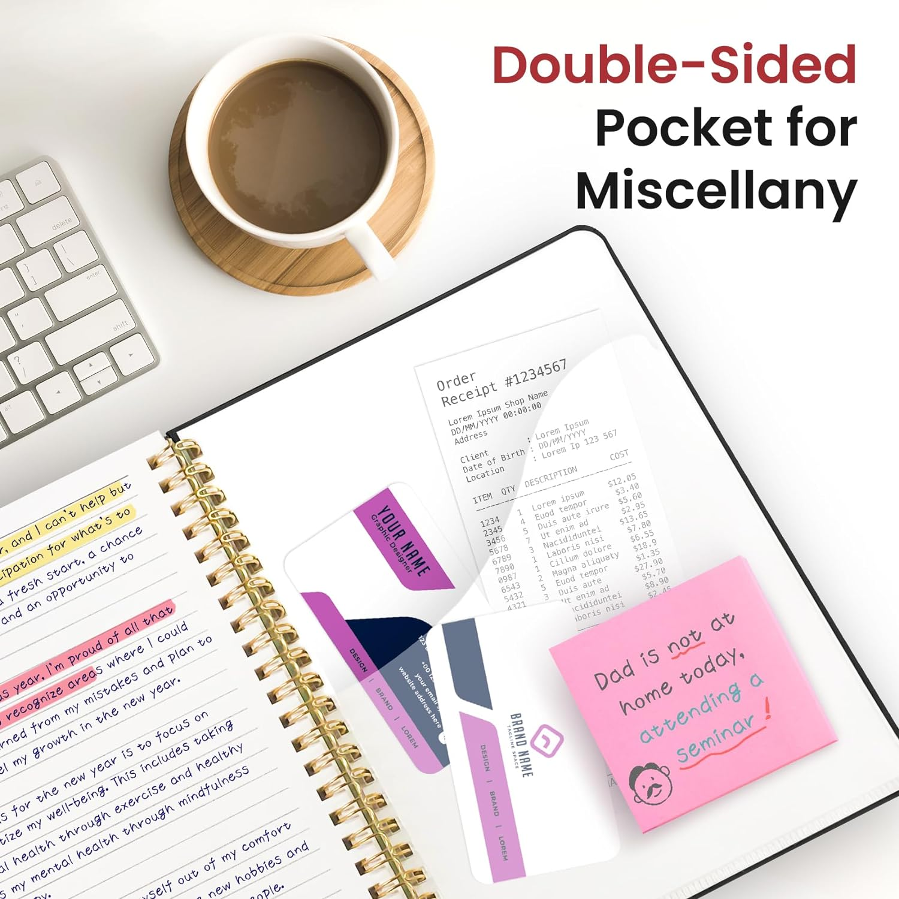

In high school, we often have an organized lifestyle because many of us live with our families.
But college runs on its own clock.
You have to make an effort to start managing your time as soon as you can, or time will manage you instead.

1. Start Your Day with a Clear Plan
Before starting your day, take a few minutes to review your schedule and prioritize your tasks.
Identify the most critical deadlines and activities that require immediate attention.
For those who prefer staying on paper, using a high-quality planner can make this process more tactile and satisfying.
Also , Apps like Todoist and Microsoft To Do allow you to create customizable task lists, set deadlines, and add reminders so nothing is left out.
Example: If you have an assignment due next week, set a reminder today to start gathering materials. By the end of the week, block a specific time to begin writing.
Breaking tasks into smaller steps keeps the workload manageable.
2. Use Time-Blocking for Focused Work
Time-blocking is a method where you schedule dedicated blocks of time for specific tasks.
Instead of multitasking, this technique encourages focused work sessions, which are especially useful for tackling major projects or study sessions.
Apps like Google Calendar and Clockify let you create time blocks for studying, attending classes, and personal time.
You can set aside a two-hour block for that literature review, followed by a break.
Example: If you have three chapters to read, block off 30-45 minutes for each, followed by short breaks.
This way, you’re focused on one task at a time, reducing distractions.
Consider investing in a desk timer to help you stick to your time blocks without constantly checking your phone.

3. Prioritize Using the Eisenhower Matrix
A common struggle for students is distinguishing between urgent and important tasks.
The Eisenhower Matrix helps you categorize tasks based on their urgency and importance:
Do: Tasks that are both urgent and important (e.g., finishing an assignment due tomorrow).
Decide: Tasks that are important but not urgent (e.g., preparing for a midterm in two weeks).
Delegate: Tasks that can be done by someone else (e.g., group project tasks).
Delete: Activities that waste time and aren’t valuable (e.g., mindlessly scrolling through social media).
4. Break Tasks into Smaller Chunks
Overwhelmed by a large assignment? Break it down.
Research shows that breaking large tasks into smaller, more manageable steps reduces procrastination.
Using a bullet journal or a notebook with designated sections for each task can help you stay on track.
Example: If you're writing a 3,000-word essay, don’t think of it as a whole. Instead, aim to complete 500 words per day, starting with research, followed by an outline, and then a draft.
Consider using Trello or Notion to break down tasks and track your progress.

5. Implement the Pomodoro Technique
The Pomodoro Technique is very effective because it allows you to take breaks between each session.
This way, you give your brain time to store information.
While many people use the standard 25-minute work session followed by a 5-minute break, personally, I find that working for one hour before taking a break suits me better.
To stay motivated and visualize your progress, try the Forest app, which rewards you with a virtual tree each time you complete a Pomodoro session.
6. Take Advantage of Downtime
You often have little free time between classes or on your commute. Instead of scrolling through social media, use that time productively.
Example: Download study materials or podcasts related to your courses and review them during downtime. Platforms like Audible and Pocket allow you to listen or read on the go.

7.Use Smart Reminders
Setting alarms for every little task can clutter your mind. Instead, use smart reminders that align with your schedule.
Example: Set a reminder to start studying a few days before an exam rather than cramming the night before.
The Structured app or Google Keep are great for setting reminders tied to specific days or times, helping you stay on track with long-term projec
8. Master the Art of Saying No
College life is packed with opportunities, but not every event or social gathering is worth your time.
Learn to say no to activities that don’t align with your academic goals or priorities.
Example: If you're invited to a last-minute party the night before a big exam, prioritize your study time instead. Politely decline and schedule a fun activity with friends after your exam as a reward.

9. Leverage Technology to Stay Organized
College students have access to a wealth of tools that can streamline time management.
From digital calendars to note-taking apps, the right tech can help you stay organized and efficient.
Example: Notion is an all-in-one workspace for taking notes, organizing assignments, and tracking goals. You can create a dashboard that includes your class schedule, to-do lists, and even group project details.
Watch Video on how to use notion
10. Stay Flexible and Adapt to Changes
No matter how much you plan, unexpected events will occur.
Flexibility is key. Adjust your schedule as needed without feeling guilty or stressed.
Example: If you planned a study session but receive an urgent email from a professor, adapt by rescheduling your study time for later in the day or tomorrow. RescueTime can help you track how you spend your time and identify areas where you can adjust.
11. Reward Yourself for Milestones
A good time management system includes positive reinforcement.
Celebrate when you hit important goals, whether it’s completing a tough exam or finishing a project ahead of schedule.
12. Review and Reflect
At the end of each day, take a few moments to reflect on what you accomplished and where you can improve.
This simple practice keeps you mindful of your progress .
Tracking is a rewarding activity.
Example: Keep a journal using apps like Day One or even a physical planner to track your accomplishments. You’ll gain a sense of satisfaction and can see areas for improvement.
Conclusion
By applying these strategies and tools, you can master the art of time management, ensuring that you stay organized and productive throughout your college journey. Remember, the key is to experiment and find what works best for you!